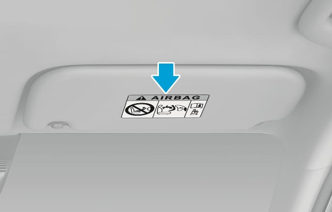
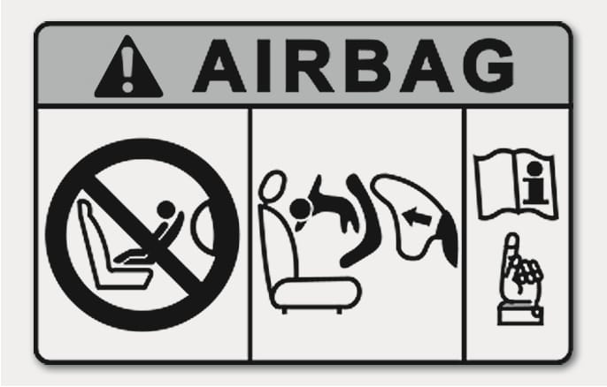

에어백 경고 라벨

2C_AirbagWarningLabelPosition
에어백 작동 시의 위험을 알리기 위해, 차량의 선바이저에 에어백 경고 라벨이 부착되어 있습니다.
차량을 주행하기 전에 에어백과 관련된 모든 주의사항을 읽고 숙지하십시오.
에어백 경고 라벨 관련 주의사항

2C_AirbagWarningLabel
차량에 어린이가 탑승하는 경우, 관련 안전 정보를 숙지한 후 지시 사항을 따르십시오.
-
13세 미만의 어린이는 에어백의 팽창 충격으로 다칠 수 있습니다.
-
어린이에게는 뒷좌석이 안전할 수 있습니다.
-
유아용 보조 좌석은 동승석에 설치하지 마십시오.
-
에어백에서 가능한 떨어져 앉으십시오.
-
좌석 안전벨트 또는 어린이 보호 장치를 사용하십시오.